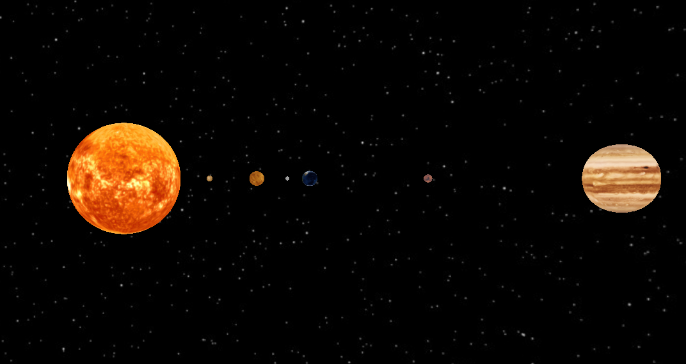
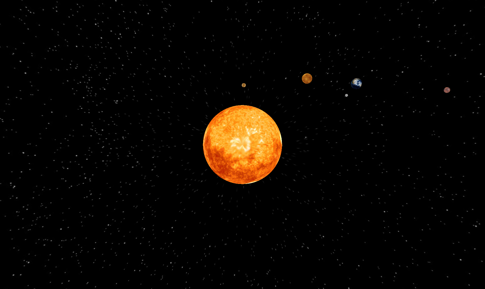
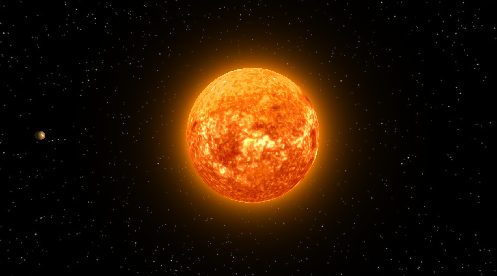

This package contains exercise code for the lecture "Computer Graphics" by Prof. Dr. Mario Botsch, TU Dortmund.
Textures and Copyright
All earth textures are from the NASA Earth Observatory and have been modified by Prof. Hartmut Schirmacher, Beuth Hochschule für Technik Berlin. All other textures are from Solarsystemscope.com. The ship model if from free3d.com.
Documentation
A pre-built HTML documentation can be found in doc/index.html and can be opened via any web browser.
Prerequisites
We use CMake for setting up build environments. You can download it here or by using your favorite package manager. You will also need a C++ compiler. Depending on your OS, the typical choices are:
- Linux - GCC/G++, usually pre-installed (terminal command:
sudo apt install build-essential) - MacOS - Clang, comes with the IDE "XCode" (terminal command:
xcode-select --install) - Windows - MSVC, can be installed alongside the IDE "Visual Studio Community" (see below) or separately here under "All Downloads" –> "Tools for Visual Studio" –> "Build Tools for Visual Studio 2019"
We highly recommend to use some kind of IDE. Prominent examples are:
- XCode (MacOS)
- Visual Studio Community (Windows)
- Visual Studio Code (Linux, Windows, MacOS)
- Jetbrains CLion (Linux, Windows, MacOS)
Below, we provide examples for setting up, compiling and running the project via command line, XCode, VSCommunity and VSCode.
Building on Linux via Command Line (no IDE)
Execute the following commands in the exercise's top-level directory:
mkdir build cd build cmake .. make
The last command (make) compiles the application. Re-run it whenever you have added/changed code in order to re-compile.
For running the code via command line use
./solarsystem
When running the cmake .. command, you might miss some dependencies. You can often find the missing package via a quick google search like "ubuntu missing ...". The typical packages are given here:
sudo apt-get install xorg-dev libglu1-mesa-dev libx11-dev freeglut3-dev libxmu-dev libxi-dev libgl-dev libglew-dev
Clear the build folder's content before running cmake .. again.
Building on MacOS (XCode)
Execute the following commands in the exercise's top-level directory:
mkdir xcode cd xcode cmake -G Xcode ..
Open the generated .xcodeproj file. Inside XCode, select the solarsystem-executable in the top bar next to the stop button. You can run the code by pressing the play button.
Building on Windows (Visual Studio Community)
- In order to get the MSVC C++ compiler, make sure that you check "Desktop development with C++" during installation of VSCommunity
- Create an empty build folder inside the project's top-level directory
- Start cmake-gui.exe (located in cmake's bin folder)
- Specify the top-level directory as source directory (button Browse source...)
- Specify the previously created build folder as build directory (button Browse build...)
- Select "Configure" using your Visual Studio Version as option.
- When configuration is finished, select "Generate".
- Start Visual Studio Community
- Open the project via File -> open -> project -> .sln in build folder
- In the project explorer window on the right, right-click the project (solarsystem) and set it as startup-project
- Switch to release mode
- Hit CTRL + F5 to build and run (or CTRL + SHIFT + B to build)
Building via VSCode
There are a lot of useful extensions for VSCode to shape it the way you like. The required extensions for C++ development and Cmake support are "C/C++" and "Cmake Tools". Extensions can be found in the extensions tab on the left. Once this is done, you can set up the project:
- Start VSCode
- Open the project via File –> Open Folder and select the exercise's top-level directory containing the
CMakeLists.txtfile and accept by clickingOK - In the bottom bar, click on
CMake, choose your compiler and selectReleasemode - In the bottom bar, click on
[all]and select the right target (solarsystem) - Still in the bottom bar, there are buttons for building (Build) and running (play symbol)
Have a look at the VSCode documentation for further details.
Keyboard Settings
- Arrow keys left/right or left mouse: y-rotate Camera
- Arrow keys up/down or shift + left mouse: x-rotate Camera
- 9/0: change camera's distance to the observed object
- 1-8: set camera to planets/sun
- tab: switch mono/stereo view mode
- r: randomize planets' positions
- g: toggle greyscale
- +/-: increase/decrease time_step
- space: pause
- w: toggle wireframe
- Escape: exit viewer
Recommended order for the exercises
- Setup of an Animated Solar System:
- Start by placing all celestial bodies in space in
Space_Object::update()andMoon::update()(src/space_object.cpp). The result should look similar to this (with a white background): - Each time the system is rendered,
Planet::angle_self_andPlanet::angle_parent_(src/space_object.h) are increased inSolar_viewer::timer(). Use this to animate the solar system, i.e. make each body rotate around its own axis, around the sun, and – in case of the moon – around the earth. - Allow a kind of navigation through the solar system and for a change of the camera's angle and eye's distance to the celestial body. Details can be found in
Solar_viewer::render()andSolar_viewer::keyboard(...)(src/solar_viewer.cpp). A video for comparison can be found in the video directory (videos/navigation.mp4). If you look at the system from above and wait some time-steps, the result should look similar to this:
- Start by placing all celestial bodies in space in
- Phong Lighting: Implement the basic Phong shader model (
src/shader/phong.vertandsrc/shader/phong.frag). Pass the shader variables inSolar_viewer::draw_scene(...). The result should look similar to this:
- Earth: For the earth, replace the Phong shader with the earth shader (
src/shader/earth.vertandsrc/shader/earth.frag) that features a special night, gloss and clouds texture. Pass the shader variables inSolar_viewer::draw_scene(...). The result can be seen in the videovideos/earth.mp4and should look similar to this:
- Sunglow (optional):
- Let the sun shine: implement a simple billboard which is a textured quad that always faces the viewer. Fill the texture with color values in
Billboard::create_glow_texture(...)to mimic a fading aura around the sun. The result texture should look similar to this:
- Then, render it in
Solar_viewer::draw_scene(...)with the color shader. Make sure, that it always faces the viewer completeBillboard::update_angles(...). The result should then look like
- Let the sun shine: implement a simple billboard which is a textured quad that always faces the viewer. Fill the texture with color values in
- Stereo Rendering (optional): Add stereo rendering to
Solar_viewer::paint()(src/solar_viewer.cpp). - More optional features:
- Try to use the sun shader for the sun, here we use a procedurally generated and animated texture for the sun.
- Maybe you noticed, that we just draw 6 of our 8 (poor pluto) solar systems' planets. But you can find all textures (plus pluto) in you
texturesfolder. So feel free to render them all. - In reality, a planet's orbit is not a circle but an ellipse. You can combine scaling and rotations to achieve this effect.
- In
meshesyou find a mesh of a spaceship, you can try to read this .off file and fly with a spaceship through the solar system. - We are always interested in your own ideas!